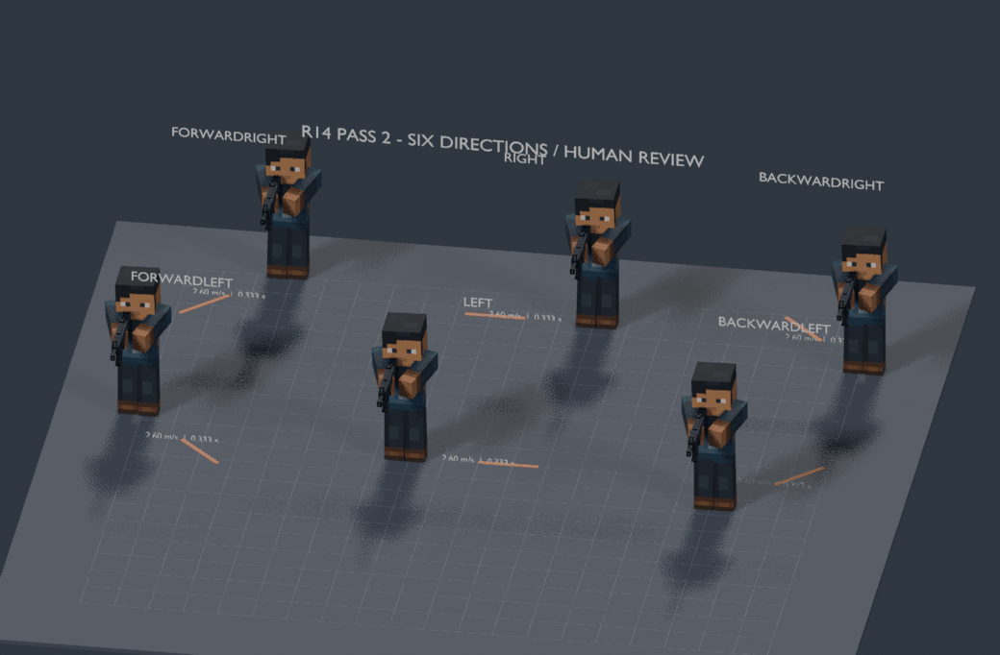
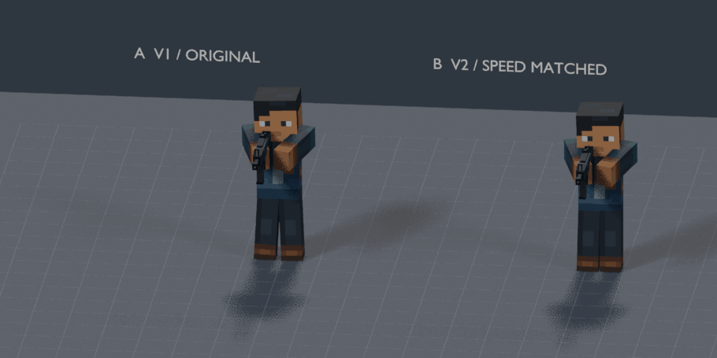
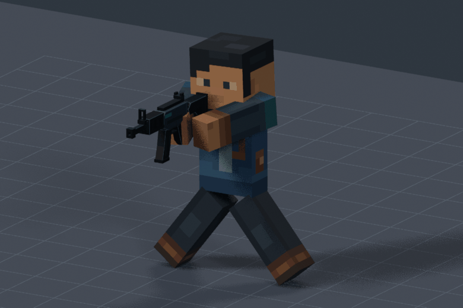
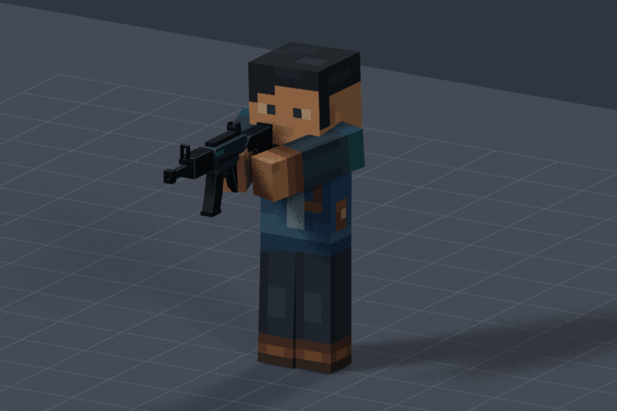
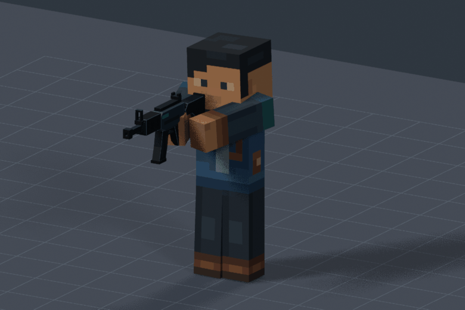
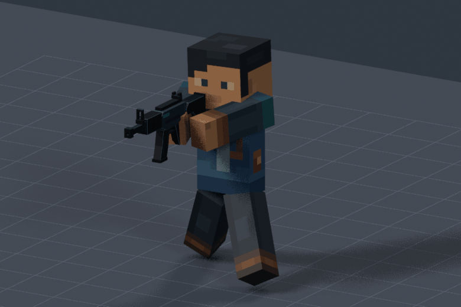
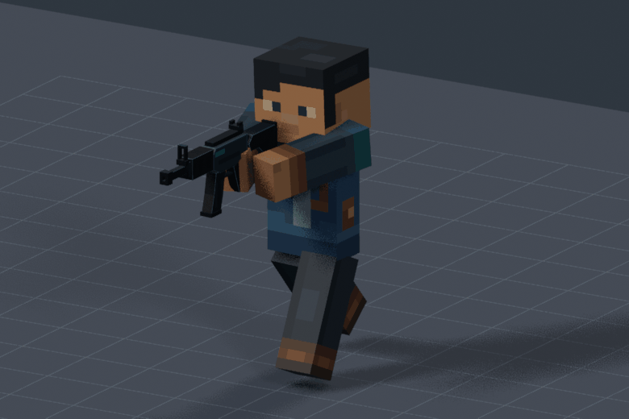
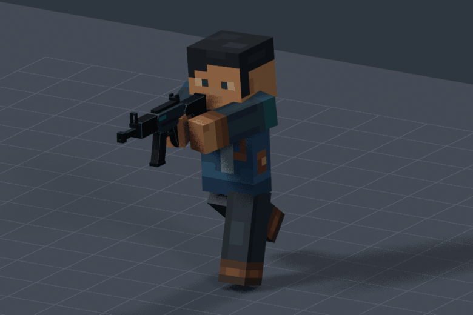

ARTISTIC STATUS: AWAITING HUMAN REVIEWR14 Pass 2 — Six combat directions
2.60 m/s real combat speed · shared 0.333s cadence · character keeps facing enemy-forward.
Native Blender review is48fps; these actual renders sample at24fps. Finite travel paths reset between repetitions.
Six-direction showcase

A/B — identical game speed
A: V1 native24fps / B: V2 speed-matched48fps. Source V1 is preserved.

Measured plants
| Direction | Centroid XY slip | Rigid corner drift |
|---|
| Right | 0.010mm | 23.2mm |
| Left | 0.010mm | 23.2mm |
| ForwardRight | 0.010mm | 32.8mm |
| ForwardLeft | 0.010mm | 32.8mm |
| BackwardRight | 0.010mm | 32.8mm |
| BackwardLeft | 0.010mm | 32.8mm |
Centroid locking does not eliminate sole rocking. Direction changes may slip; existing Forward/Backward Walk endpoints are comparison baselines.
Right → ForwardRight → Forward
Left → ForwardLeft → Forward

Right → BackwardRight → Backward

Left → BackwardLeft → Backward
ForwardRight → BackwardRight

ForwardLeft → BackwardLeft

ForwardRight → BackwardRight → BackwardLeft → ForwardLeft → ForwardRight
Forward → ForwardRight → Right

Backward → BackwardLeft → Left

Full measured report · Dense measurements · Preview verification